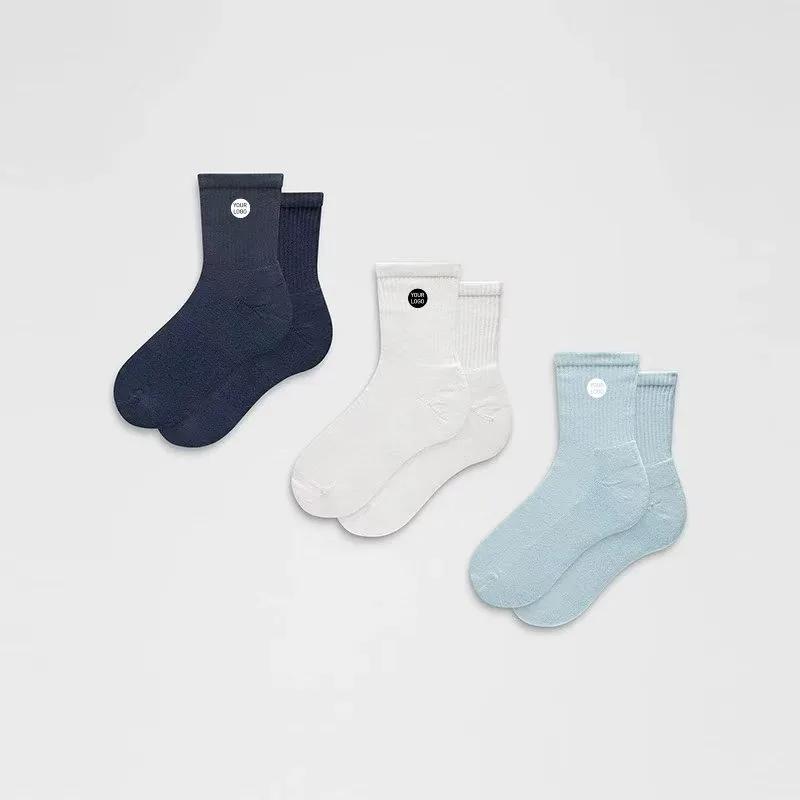

Product type — ankle and no-show
The two shortest heights, and the fastest place to start: at 100 pairs there is room to test a colourway before committing a season to it. The hard part is not the knitting — it is making a short sock stay where it was put.

Before you write
Colourways under 100 pairs. The floor does not move for a first order — it is the machine setup, not the paperwork.
Stock replenishment. We make to your specification, so there is no shelf to ship from this week and no white sock in six sizes sitting in a warehouse.
Certified seamless or medical hosiery. If the product needs a device registration or a compression class printed on it, we are the wrong factory and we will say so before you spend on sampling.
The real problem
Ask any buyer who has sold no-shows what came back. It is never the print. It is the sock sliding off the heel, and it is decided by two things that are set on the first pair.
Where the heel grip sits. If the design has a grip inside the heel, a few millimetres of position changes whether it catches the heel at all, and the right position depends on the size run rather than on a template. This is the single detail worth spending a sample on.
How tight the cuff is. Tight enough to stay on, loose enough not to leave a mark. It is a tension setting on the machine, adjusted on the first pair and then held for the reorder — which is exactly why the approved sample is kept as the reference.
What we will not do. Promise a zero-return rate. A no-show is the most fit-sensitive sock there is, and the honest answer is that the first pair is the test. We send it before the line is set up precisely so the test happens while it is still cheap to change.
Three heights, three words
They are bought for different reasons and they are specified differently. Getting the word right at brief stage saves a sample.
Specification
Two lines get a quote: the height and how many colourways.
| Heights | No-show, ankle or quarter — named, not 'short'. 0, 3.5 and 10 cm above the ankle are the usual references, and the finished height comes from your measurement |
|---|---|
| Heel grip | Optional; position set on the first pair |
| Cuff | Rib depth and tension agreed on the first pair |
| Cushioning | Plain, or a terry loop inside the sole |
| Construction | Standard heel or Y-heel; hand-linked or flat-lock toe |
| MOQ | 100 pairs per style per colour |
| Sampling | 3–5 days after artwork approval |
| Bulk lead time | 20 days for 1–500 pairs; rush available |
| Needle gauge | 144N / 168N / 200N |
| Yarn | Combed cotton, polyester, acrylic, nylon, spandex blends |
| Sizes | EU 35–50 adult and 16–35 kids, US 3–16 — or your own chart |
| Packing | Poly bag, header card, hang tag, retail box |
| Trade terms | EXW / FOB / CIF / DDP — quoted per order |
How an order runs
A sketch, a photo of a sock you like, or a tech pack. Height and colourway count are the two things we need before quoting anything.
Your artwork on your height, with the yarn and the mark position marked up. This is where a no-show's heel detail gets decided, not later.
Knitted and finished, sent for approval. Wear it in a shoe before you sign it off — that is the only test that matters at this height.
Knitting, linking, finishing and packing under one roof for 1 to 500 pairs. Then EXW, FOB, CIF or DDP from Shanghai or Ningbo.
Questions buyers ask
Straight answers, no sales copy.
No, and this is the misunderstanding that wastes the most time. The minimum is 100 pairs per colourway, so three colourways is a 300-pair order and three machine setups. A size run is the opposite: six sizes across 100 pairs is normal, because the machine does not stop between sizes.
That is the whole design problem, and nobody can promise it from a spec sheet. It is settled on the first pair, where the heel grip — if the design has one — and the cuff tension are set against your own size run. If the first pair slides, the position moves; the sock does not change.
Three different socks. A no-show finishes below the shoe line so it disappears in a loafer; an ankle sits just above the shoe collar; a quarter comes up over the ankle bone and is what most schools and tennis clubs actually specify. The difference is 15 to 25 millimetres and it changes the mock-up, so write the height you mean rather than the word 'short'.
Rarely worth it. There is very little flat fabric on a no-show, so a stitched mark ends up half on the cuff edge. Knitted or printed marks are the realistic routes at this height, and we will say so rather than take the order and disappoint you.
Combed cotton with nylon and a little spandex is the default for a sock that has to survive repeated washing and still feel soft. Polyester dries faster and holds colour in print better; bamboo is softer but pills sooner at this weight. Send the sock you are replacing and we will match the hand feel rather than argue about fibre names.
A digital mock-up comes back within 24 hours of the brief. The knitted first pair takes 3 to 5 days after the artwork is confirmed, and bulk is 20 days for up to 500 pairs, with a rush option.
By type
Same factory, different height, different minimum.
No-show, ankle or quarter, and how many colourways you need. The reply is a mock-up within 24 hours and a price band for the quantity you name.